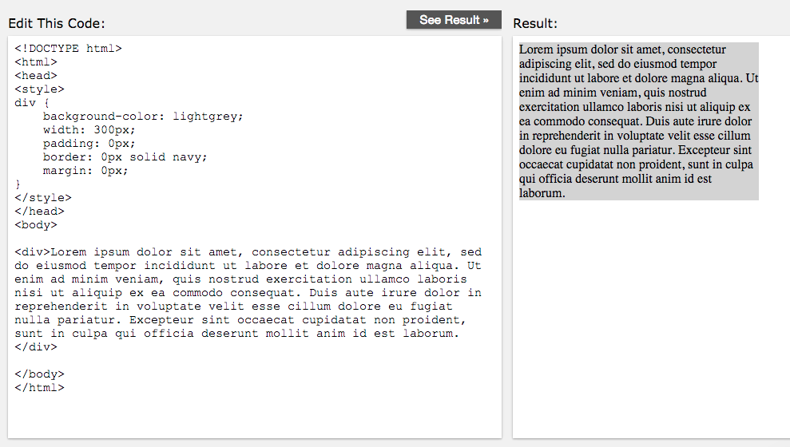
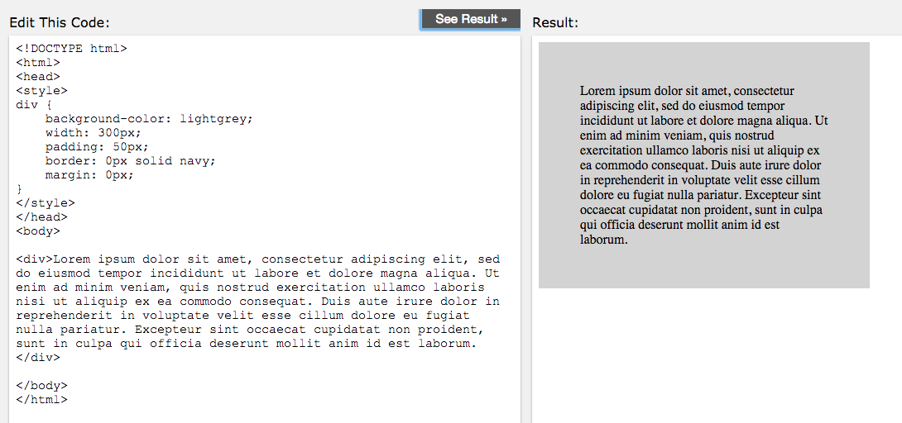
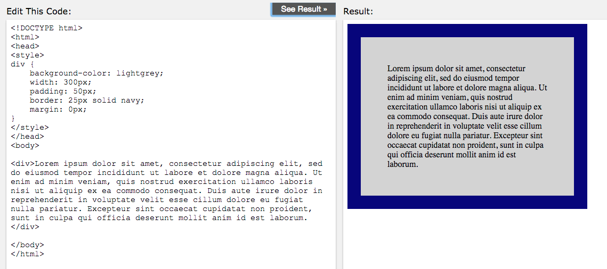
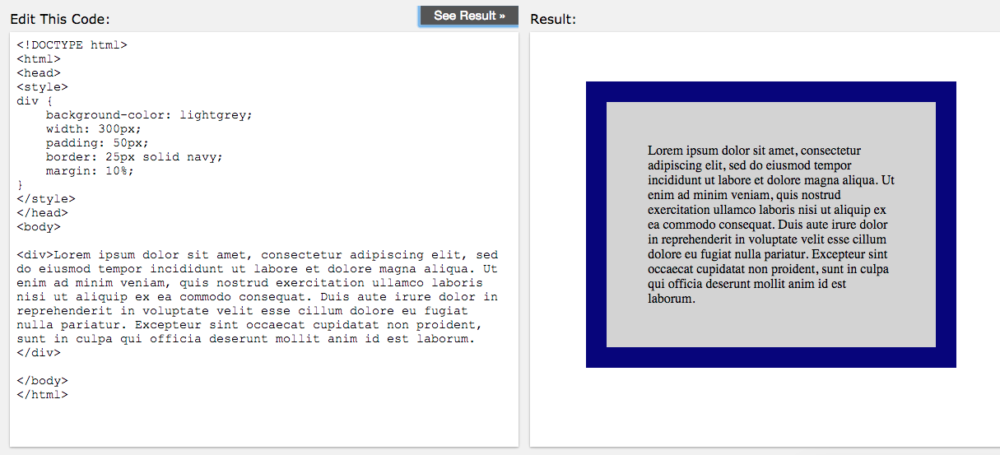

Let's Learn about the CSS Box Model!
Ok so I just finished week 2 of Dev Bootcamp's Phase 0. Woo hoo! This week was HTML and CSS. The CSS "Box Model" concept was covered. This is my attempt to make sense of it.
#1: Every HTML element is considered a "box". So a div tag is a box; a p tag is a box; the body tag is a box; every single tag is a box. Got it? Good!
#2: Every "box" has four attributes: content, padding, border, and margin. Take a look at this:

The content is what is between the tags. The padding is transparent space between the content and the border. The border is visible (if you want it to be) and goes around the padding. The margin is additional padding around the border.
Take a look at this:
On the left side is the HTML and CSS (the CSS is in the style tag), on the right side is the result of hte HTML. The content is text filler. The "inside" of this "box" is shown by the grey background. For this specific image, there is no padding, border, or margin. The next several images will show what happens when each of these are added.
Here is what it looks like when we add padding to this HTML element:
Now you can see there is spacing between the text (the "content" of this HTML element) and the edge of the padding. This padding is "inside" the HTML element, which is visible from the grey background color
Ok now let's see what happens if we add a border:
You guessed it, now there is a border around the padding. Take a look at the code on the left to see what has been changed to make this happen.
And below we will see our margin:
The margin has moved the box away fromm the edges of the document. Notice the margin is "outside" the HTML element (it is not in grey). Margin settings can be used to locate an object on the page. Also take a look at the code on the left. For the margin, I did not enter pixels (px), I entered a percentage (%) which tells the browser to make the margin 10% of the entire document. That is a pretty cool way to set the width of the margin (and you can do that with the padding and border as well, and also the width and height of the HTML object itself.)
Ultimately the CSS Box Model gives us a lot of power over the sizing of HTML elements, their spacing, how they look, and where they are placed on the page. I hope this helped you and makes sense!